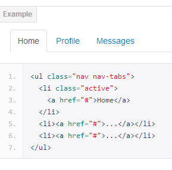

Clase 4 Boostrar Twitter
Componentes
Presenta: John Andrey / @Jandrey15
Botones Despegables
Ejemplo
Dividir Boton Despegable
Nav: tabs, pills, and lists
Basic tabs

Ejemplo
Basic pills
Nav lists
Ejemplo

Tabbable nav
Ejemplo
Navbar, Navbar componentes
Search form, Fixed to top